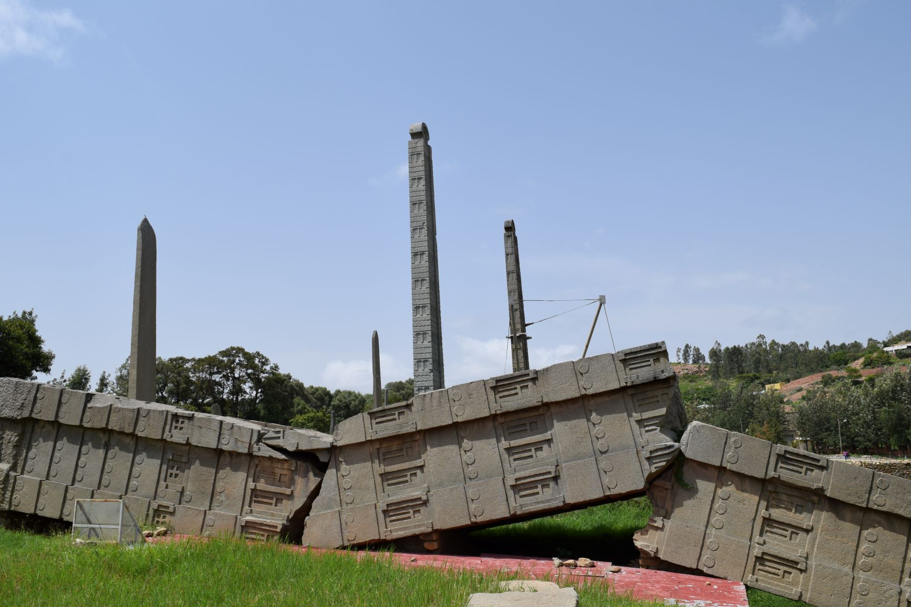

Have You Ever Travel To Aksum?
Axum, is a city in northern Ethiopia named after the long lived Kingdom of Aksum. Located in the Tigray near the base of the Adwa mountains, this town has an elevation of 2130 meters.AXUM, the site of Ethiopia’s most ancient city, is today a small town, ignorant of its glorious past. The 16th century Cathedral of St. Mary of Zion is built on the site of a much older church probably resembling that of Debre Damo, dating from the 4th century AD. Only a platform and the wide stone steps remain from the earlier structure. The Cathedral is the repository of the crowns of some of Ethiopias former emperors. According to church legend, it also houses the original Ark of the Covenant – thus making St. Marys the holiest sanctuary in Ethiopia